Windows 8 Consumer Preview を DVD-R からインストール……失敗
公開日：
Windows 8 Consumer Preview （途中までインストールした） - だるろぐ の続き。既存の環境がぶっ壊されるかと心配した俺は、まったくのチキン野郎だった。
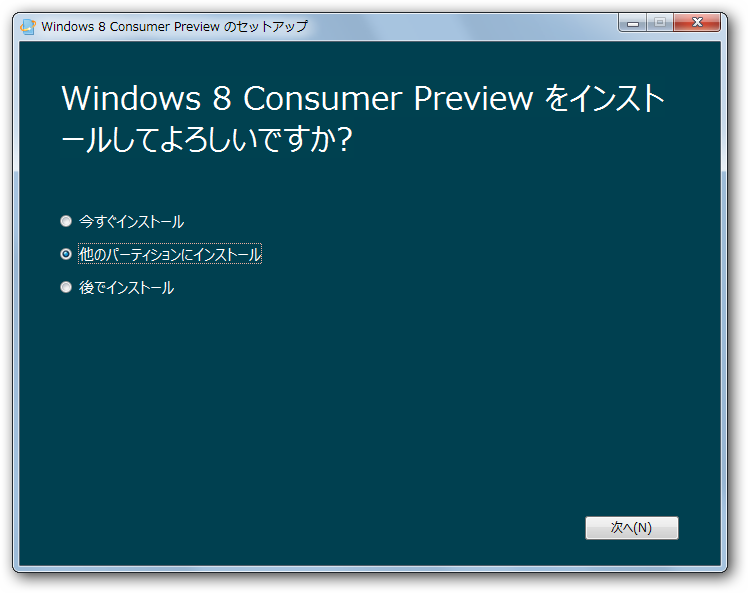
わざわざVHDを用意して［ほかのパーティションへインストール］を選択したけれど…
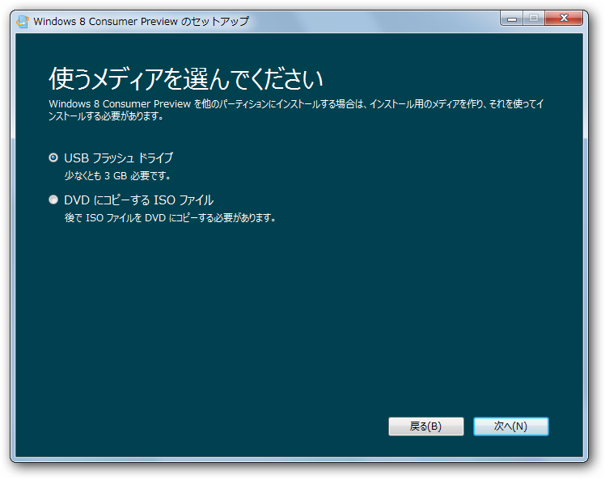
メディアを作成する画面に誘導された ／(^o^)＼
こういうとき、全作業の流れを表示する“目次”的なユーザーインターフェイスがあればいいのになって思う。
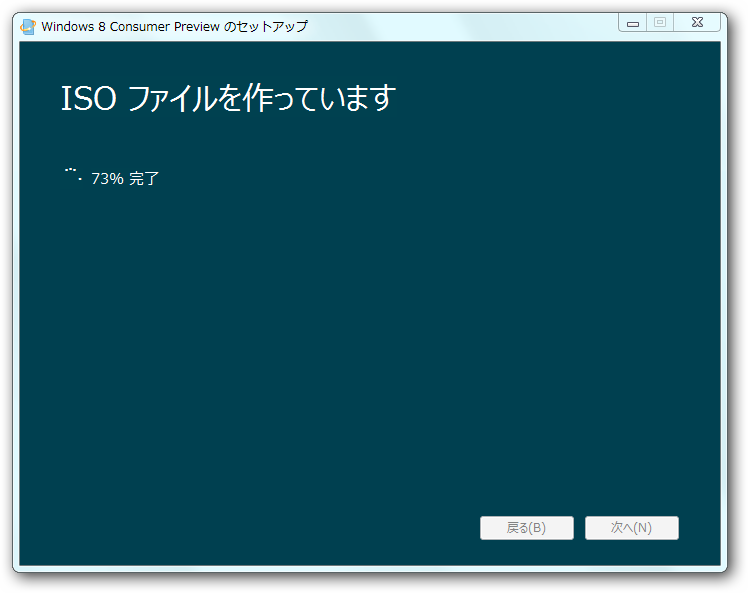
手元に USB メモリがなかったので、DVD-R の作成を選択。ISOイメージを保存する。サイズは2.5GBといったところ。
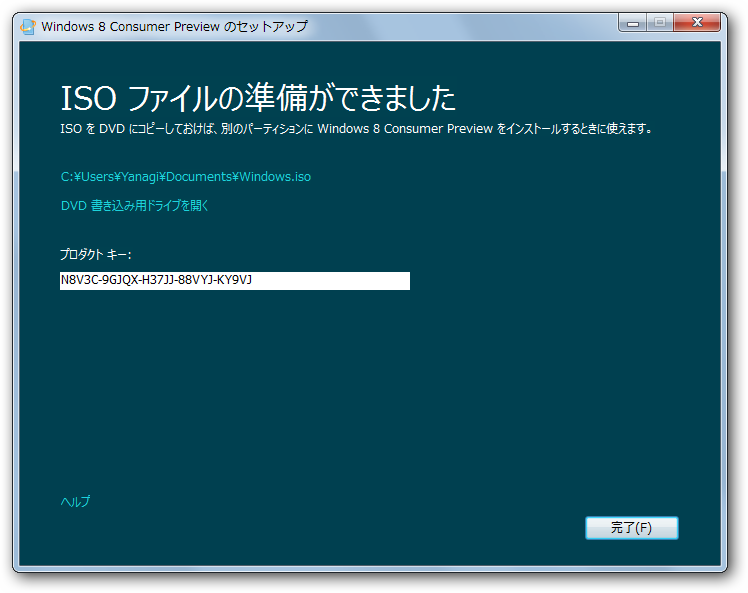
完了。プロダクトキーも発行された。
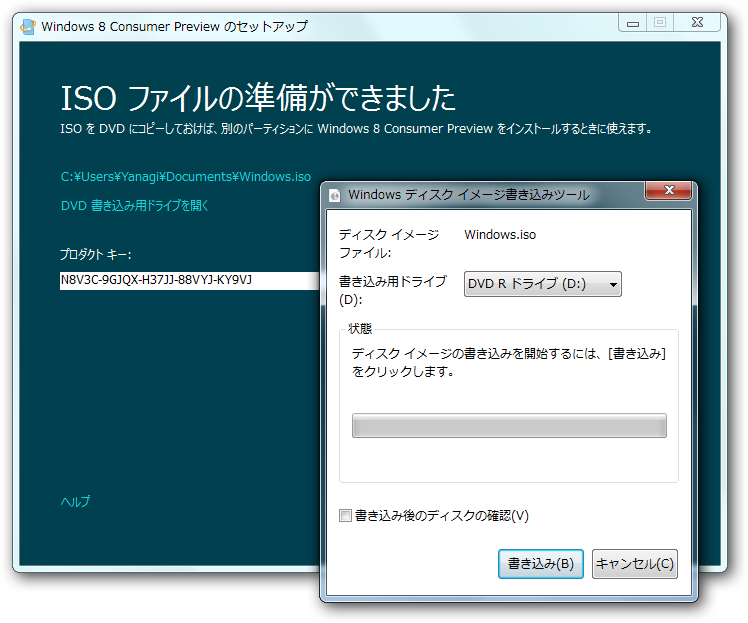
Windows 7 ならそのまま書き込みまでやれる。
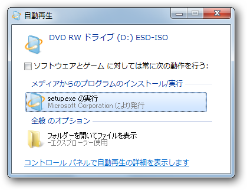
書き込みが終わるとドライブからぶしゃーっとトレイが出てきたので、手でぐぬぬっ！と押しやる。インストールの開始！
なにやらスプラッシュウィンドウが出て……
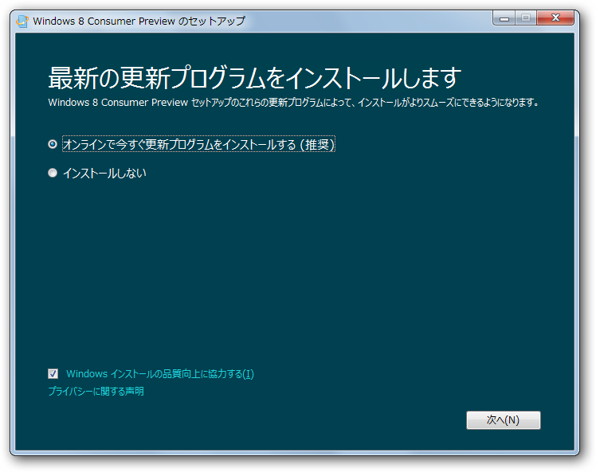
更新プログラムのダウンロードが促される。
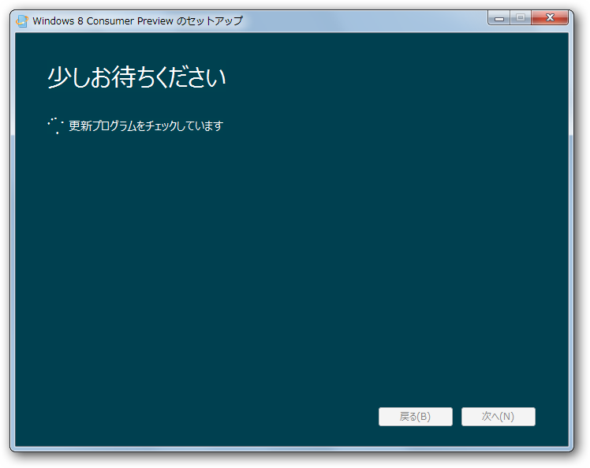
今回はおとなしくダウンロード。どうせ更新プログラムなんぞないだろうし。
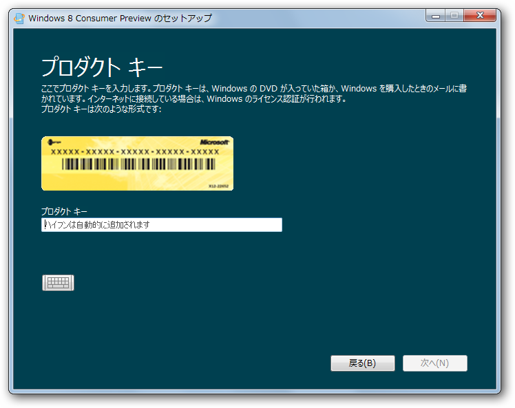
プロダクトキーの入力を求められるので、それを入力する……
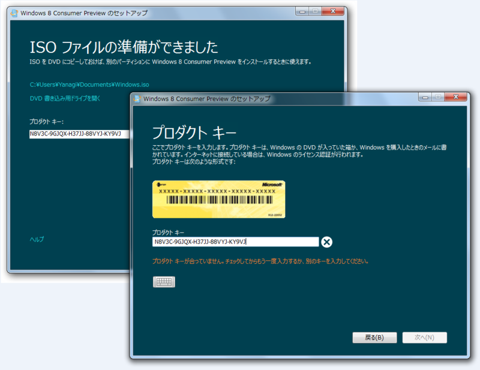
なぜかダメでした ／(^o^)＼ あれれ？ さっきコピーしたのをそのまま貼りつけたのにな……
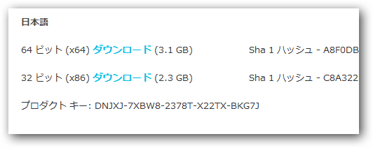
Windows 8 Consumer Preview の ISO 形式
に書いてあるキーでもダメだった。まぁ、認証サーバーが混んでいたり、*1一時的なエラーなのかもしれない。
追記
ISO をダウンロードして、Webページに記載されているプロダクトキーを利用したところ、無事インストールできました。
*1:プロダクトキーのチェックはオフラインでも行える